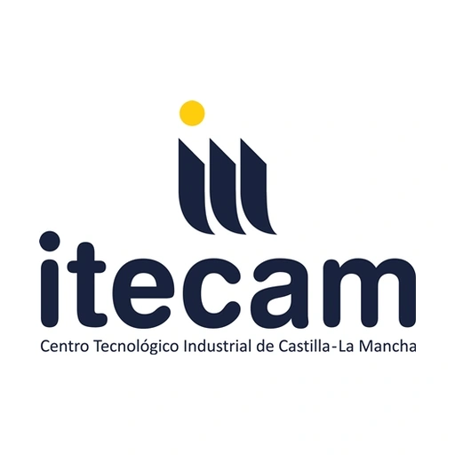

Simulación y control autónomo de vehículos
Desarrollé en Python un banco de pruebas con diferentes contralodres autonomos como PID, Pure Pursuit, MPC y PID adaptativo, que actuaban sobre un modelo cinematico y que recorrian varios circuitos y escenarios. Todo esto permitio:
- Comparar el desempeño de cada uno de los controladores autonomos en los diferentes escenarios, dandonos la oportunidad de saber que controlador era mejor en cada situación.
- Aprender más sobre el control autonomo de vehiculos y drones.
- Ademas, tambien se creo un servio de comunicacion mediante MQTT que permitia revisar toda la telemetria de los vehiculos en tiempo real.
Jul. 2026 - Sep. 2026
Prácticas
Prácticas